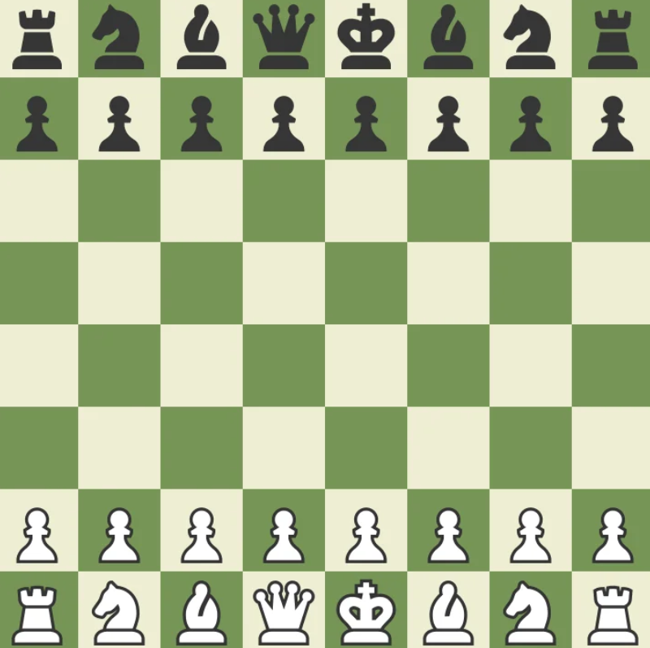

!!!. Cách sắp xếp bàn cờ
Đặt bàn cờ đúng hướng:
| Hàng đầu tiên (hàng 1) và hàng cuối cùng (hàng 8): Hàng này dành cho các quân cờ chính (vua, hậu, xe, mã, tượng). Cách sắp xếp từ trái sang phải (theo hàng 1 cho Trắng, hàng 8 cho Đen): Xe (Rook): Đặt ở 2 góc ngoài cùng (a1 và h1 cho Trắng; a8 và h8 cho Đen). Mã (Knight): Đặt cạnh xe (b1 và g1 cho Trắng; b8 và g8 cho Đen). Tượng (Bishop): Đặt cạnh mã (c1 và f1 cho Trắng; c8 và f8 cho Đen). Hậu (Queen): Đặt trên ô cùng màu với quân Hậu (Trắng ở d1; Đen ở d8). Vua (King): Đặt trên ô còn lại (Trắng ở e1; Đen ở e8). Hàng thứ hai và hàng thứ bảy là hàng dành cho các quân tốt (Pawns) Trắng: Toàn bộ hàng 2 (a2 đến h2). Đen: Toàn bộ hàng 7 (a7 đến h7). |
 |
|---|